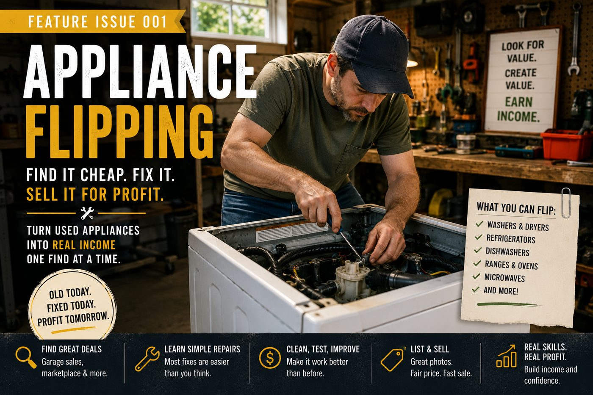
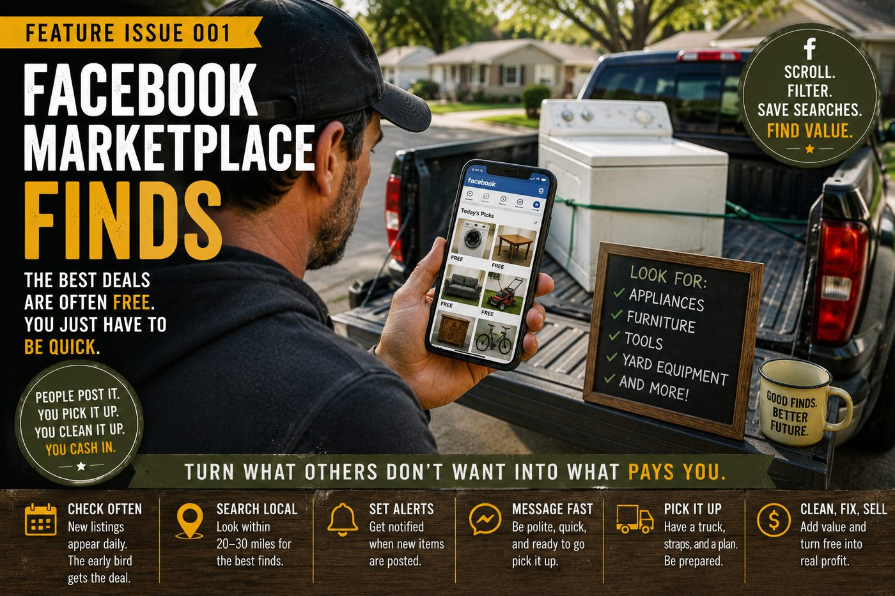
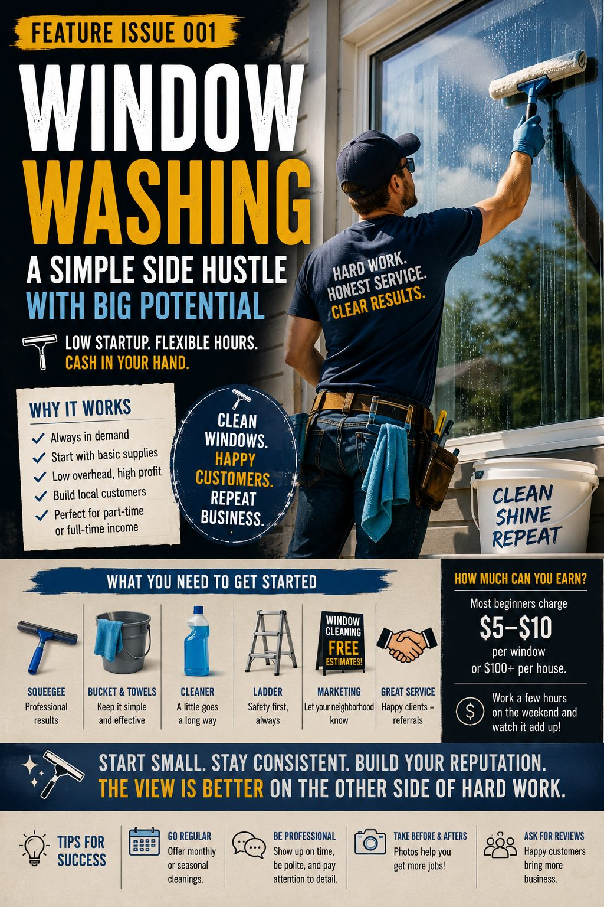
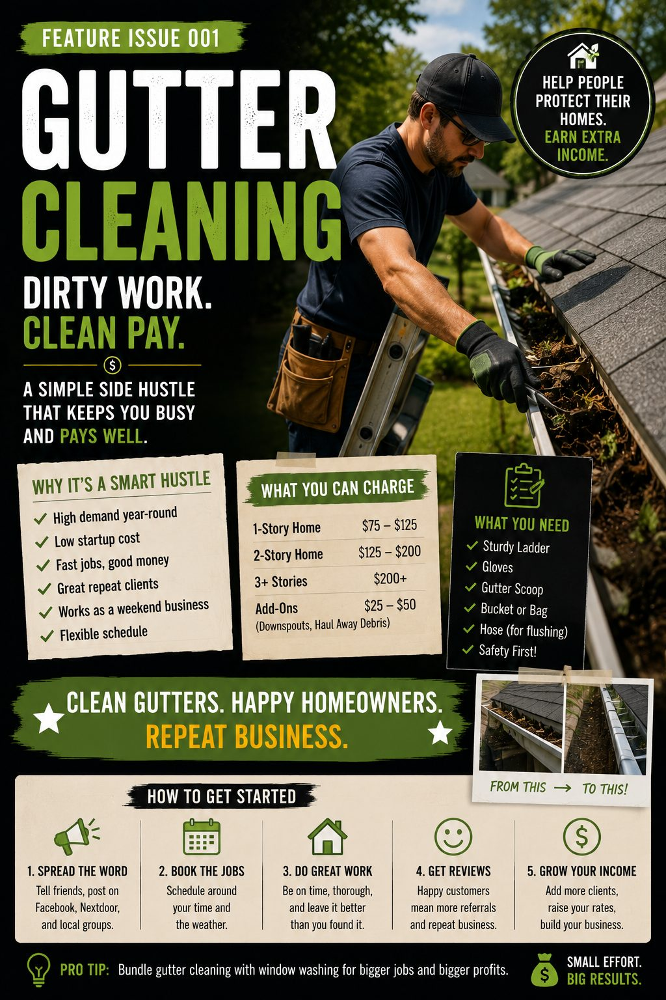
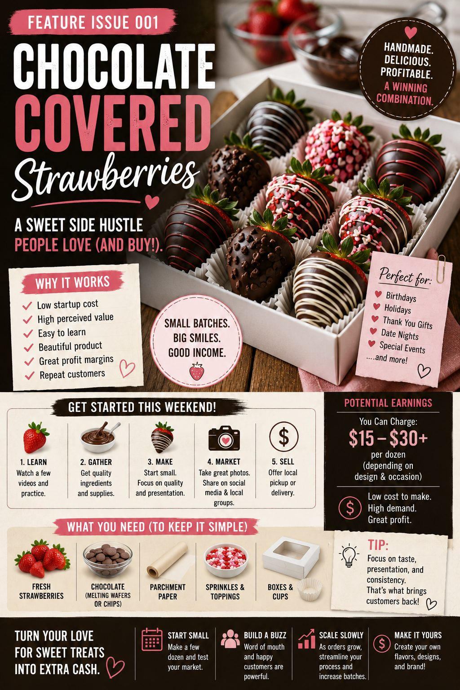
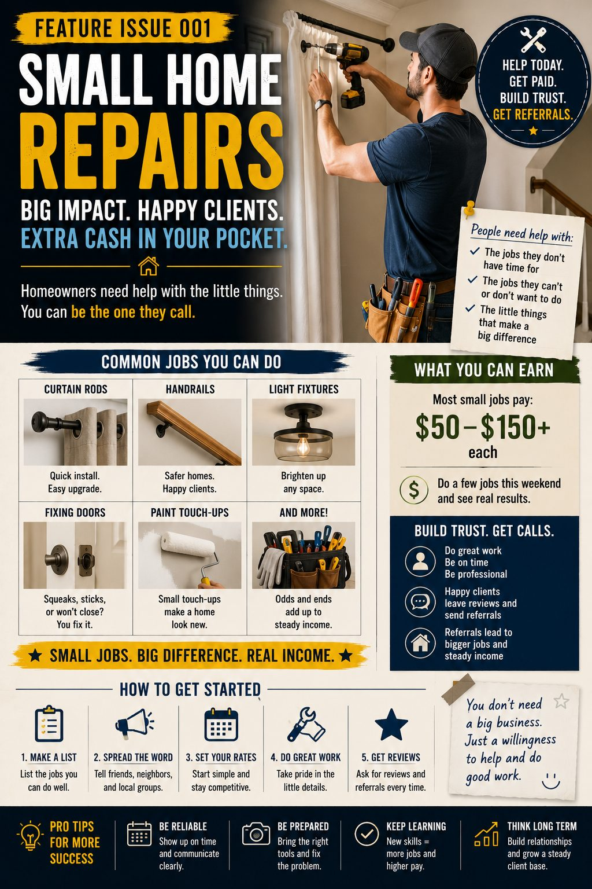
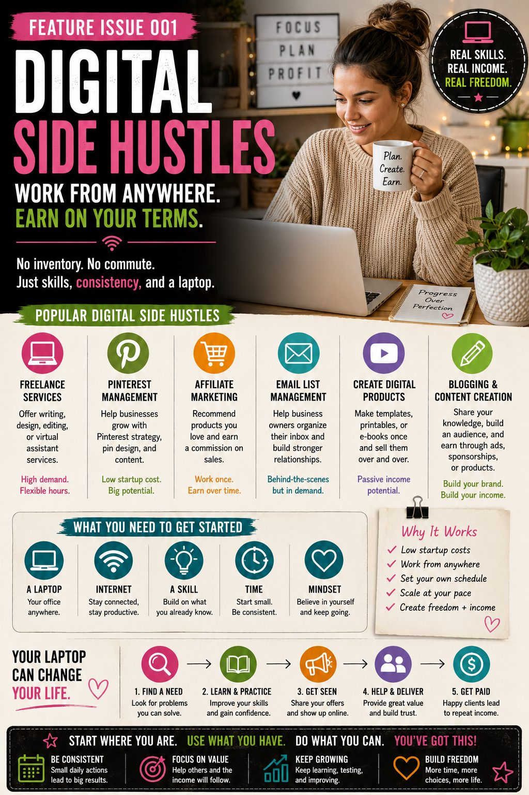
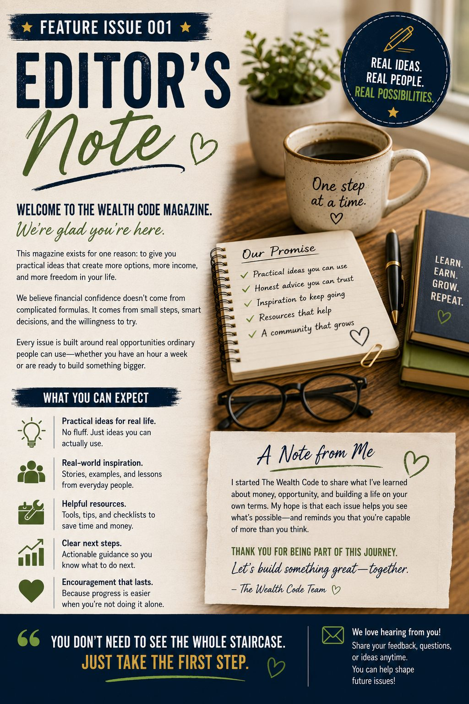

Real Side Hustle Ideas You Can Start With Little Money
Practical ways to earn extra income through local services, repair and resale, food-based businesses, useful skills, and digital work—without pretending success happens overnight.
The best side hustle is not always the most exciting idea. It is often the one that solves a real problem for someone nearby.
Affiliate Disclosure: This issue contains affiliate links. If you make a purchase through one of these links, I may earn a commission at no additional cost to you. As an Amazon Associate I earn from qualifying purchases.
Inside This Issue
Start where your skills, resources, and community meet
Editor’s Welcome
Opportunity often looks ordinary at first
People are frequently told that earning more begins with changing their mindset. Sometimes that may be helpful, but it is rarely what someone needs when the car needs repairs, the utility bill is due, or the household budget no longer stretches far enough.
In those moments, people do not need another lecture. They need useful possibilities.
That is the purpose of this issue. It looks at practical ways people can earn additional income using familiar skills, modest equipment, local demand, or items other people no longer want.
None of these ideas is presented as effortless money. Every legitimate side hustle requires some combination of time, reliability, judgment, learning, and work. But many of them can begin on a small scale, often without a storefront, a large loan, or years of specialized training.
You do not need to pursue every idea in this issue. You only need to recognize one that fits your circumstances well enough to investigate further.
People often search for a completely new opportunity while overlooking the problems they already know how to solve. Rich Abbott
Discover things people throw away that may still have value. Learn how to find, repair, repurpose and resell furniture, electronics, tools, bikes and more.
Opportunity 01
Appliance Flipping: Finding Value in What Others No Longer Want
A used washer, dryer, refrigerator, or stove may look like a disposal problem to one person and a repairable asset to someone willing to clean, test, transport, and resell it.

Appliance flipping is not simply buying an old machine and listing it again at a higher price. The value comes from doing what the previous owner may not have the time, ability, tools, or interest to do.
That may include picking the appliance up, cleaning it thoroughly, diagnosing a simple problem, replacing an inexpensive part, testing it safely, taking better photographs, writing a clear listing, and delivering it to the next buyer.
In many communities, used appliances remain in steady demand because new models can be expensive and renters, landlords, students, and first-time homeowners often need a functional replacement quickly.
Where beginners find inventory
Facebook Marketplace, local buy-and-sell groups, estate sales, neighborhood apps, apartment turnovers, curb alerts, and word of mouth can all produce leads.
Some sellers are not trying to make money from the appliance. They simply want it removed before a new model arrives. That urgency can create an opportunity, but it should never replace careful inspection.
- Look for listings that clearly state the known problem.
- Ask when the appliance was last used successfully.
- Request the model number before arranging pickup.
- Check whether replacement parts are readily available.
- Avoid machines with signs of fire, severe corrosion, or major water damage.
- Confirm that you have a safe way to transport the item.
Start with cleaning and simple repairs
Beginners are usually better served by appliances that work but need cleaning, cosmetic improvement, a new hose, a switch, a belt, a heating element, or another straightforward repair.
A machine that appears neglected can often be improved significantly through deep cleaning alone. Buyers respond to clean surfaces, organized photographs, honest descriptions, and visible proof that the appliance has been tested.
More complicated work involving refrigerant, gas connections, high-voltage components, sealed systems, or serious electrical faults should be left to properly trained professionals.
Transportation is part of the business
Large appliances are heavy, awkward, and capable of damaging floors, walls, vehicles, or people. A seller who can remove an appliance safely and a buyer who can deliver it reliably both create value.
Before accepting an item, consider the complete trip: stairs, doorways, truck or trailer access, tie-down points, unloading, and whether another person will be needed.
A modest appliance-flipping example
Suppose you acquire a working dryer that needs cleaning and a minor part replacement. A possible outcome might look like this:
This is an example, not an earnings promise. Actual costs and resale values vary by condition, location, demand, transportation, and the accuracy of your diagnosis.
Build trust into the listing
State what was cleaned, repaired, tested, and observed. Include the model number, dimensions, age if known, cosmetic flaws, pickup or delivery terms, and whether any warranty is offered.
Avoid phrases such as “probably an easy fix” when you do not know the cause of a problem. Honest uncertainty is better than false confidence.
One carefully prepared appliance can teach you more than buying five questionable machines at once. Begin with a manageable project, keep records of every expense, and learn which brands and repairs make sense in your local market.
Opportunity 02
Facebook Marketplace Finds: Buy Better, Improve Wisely, and Resell Honestly
Marketplace flipping works best when you understand one category well enough to recognize underpriced value, avoid hidden problems, and present the item more effectively to the next buyer.

Facebook Marketplace contains everything from free curbside furniture to nearly new tools, bicycles, patio sets, exercise equipment, baby gear, seasonal decorations, and electronics.
The variety is appealing, but it can also become a trap. A low price does not automatically make an item profitable. Storage, cleaning, repairs, missing parts, transportation, platform competition, and the time required to find a buyer all matter.
Choose one category before choosing everything
Beginners often perform better when they focus on a narrow category. Familiarity makes it easier to judge condition, recognize desirable brands, estimate repair costs, and understand typical resale prices.
A person who understands bicycles may quickly notice a quality bike with flat tires and surface rust. Someone familiar with woodworking tools may recognize an older, durable tool that only needs cleaning and a replacement cord.
Possible beginner categories include:
- Solid-wood side tables and small furniture
- Hand tools and common power tools
- Bicycles and children’s outdoor equipment
- Patio furniture and seasonal yard items
- Shelving, storage cabinets, and workbenches
- Small appliances with clear, testable functions
Research the resale price before buying
Asking prices are not the same as completed sale prices. Search for similar items in your area and note how long they appear to remain listed.
An item advertised repeatedly for $200 may not actually sell for that amount. Local demand, season, condition, size, and delivery options can have more influence than the original retail price.
Before making an offer, estimate:
- Acquisition price
- Fuel and transportation
- Cleaning and repair materials
- Replacement hardware or missing parts
- Storage space
- Likely resale price
- How quickly the item may sell
Photographs can create measurable value
Many listings underperform because the photographs are dark, cluttered, incomplete, or taken before the item is cleaned.
Photograph the item in good natural light against an uncluttered background. Include the front, sides, labels, dimensions, features, and any flaws a buyer should see before arranging pickup.
A clear listing saves time because serious buyers know what they are considering. It also reduces the temptation to oversell the item’s condition.
Negotiate without creating unnecessary conflict
A respectful message works better than an aggressive low offer. Explain when you can pick up the item and make the transaction easy for the seller.
For example, “I can pick it up this evening and bring help for loading. Would you consider $60?” is more useful than sending only “$40 cash.”
Convenience has value. Sellers may accept less when a buyer communicates clearly, arrives on time, and removes the item without creating extra work.
Avoid common scams and unsafe transactions
Keep communication on the platform when practical. Be cautious with requests involving verification codes, overpayments, unusual shipping arrangements, payment outside the agreed method, or third parties who will supposedly collect the item later.
Meet in a safe public place for portable items. When visiting a residence, tell someone where you are going, avoid carrying large amounts of cash, and leave if the situation feels unsafe.
A small furniture-flipping example
Imagine finding a solid-wood side table with scratches but no structural damage:
The true return also depends on the time spent collecting, refinishing, photographing, listing, communicating, and arranging pickup or delivery.
Do not let inventory take over your life
Resale businesses can quietly become storage businesses. Establish a limit for the number of items you will hold and how long you will keep them.
If an item does not sell after reasonable price adjustments and improved photographs, consider lowering the price, bundling it, donating it, or moving on. Money tied up in slow inventory cannot be used for a better opportunity.
Opportunity 03
Window Washing: A Simple Service Built on Visible Results
Window washing can be started with modest equipment, practiced on a small scale, and expanded through repeat customers, neighborhood referrals, and seasonal service packages.

Some side hustles are difficult to explain because the value is invisible. Window washing is different. The customer can usually see the result immediately.
A clean window allows in more light, improves the appearance of a home, and removes the haze, dust, fingerprints, water spots, and outdoor residue that gradually become part of the background.
That visible difference makes window washing easier to demonstrate, photograph, recommend, and sell than many less tangible services.
Start with accessible residential windows
Beginners do not need to begin with tall commercial buildings, complicated architecture, or second-story windows that require advanced equipment.
Ground-floor residential windows, glass doors, small storefronts, enclosed porches, and accessible interior windows can provide a safer and more manageable place to learn.
Practice first on your own home or for someone you know. Learn how much solution to use, how to prevent streaks, how to protect floors and furniture, and how long each type of window takes.
The basic process
A simple window-washing job may include removing loose debris, applying a cleaning solution, scrubbing the glass, using a squeegee correctly, wiping edges, cleaning the sill, and inspecting the window from several angles.
The details matter. A customer may notice dirty corners, wet floors, damaged screens, or drips on freshly painted trim even when the center of the glass looks clean.
- Confirm exactly which windows are included.
- Clarify whether the price includes interior and exterior glass.
- Discuss screens, tracks, sills, and hard-water stains separately.
- Protect indoor floors and nearby furnishings.
- Inspect existing cracks, broken seals, or damaged screens before starting.
- Use equipment that matches the height and access conditions.
Pricing by the window, pane, hour, or project
Window-washing prices vary by region, building type, window size, height, access, condition, and whether interior cleaning is included.
Some operators price by the window or pane. Others estimate the time required and present one project price. The important part is to use a method that accounts for setup, travel, difficult access, screens, tracks, cleanup, and the condition of the glass.
A low introductory rate may help a beginner gain experience, but underpricing can create problems. A job that sounds like “just a few windows” may involve moving furniture, removing screens, scraping residue, climbing repeatedly, and cleaning both sides of every pane.
Recurring customers can transform the economics
One-time jobs can produce useful income, but repeat service is often more valuable. A customer who schedules spring and fall cleaning reduces the time you spend finding new work.
Small offices, salons, restaurants, professional buildings, and local storefronts may need exterior glass cleaned more frequently than residential customers.
Recurring work also becomes more predictable because you already know the property, the access points, the approximate time required, and the customer’s expectations.
Natural add-on services
Window washing can be paired with related services when you have the equipment, insurance, experience, and ability to perform them safely.
- Screen cleaning
- Track and sill detailing
- Glass door cleaning
- Mirror cleaning
- Light exterior pressure rinsing
- Gutter cleaning
- Seasonal exterior cleanup
Add-ons should be clearly described and priced. Do not include time-consuming extras simply because the customer assumes they are part of the basic service.
A small residential window-washing example
A beginner might complete an accessible one-story job with a straightforward group of windows:
The actual return depends on the time required, equipment costs, travel, insurance, local pricing, taxes, and whether another person assists with the job.
Reliability can matter as much as technique
Customers remember whether you arrived on time, communicated clearly, respected their property, and left the work area clean.
A technically skilled person who is difficult to reach may lose work to someone who provides dependable service and a consistently good result.
Send a confirmation before the appointment, explain what the customer should prepare, and follow up after the job. Those small habits can lead to repeat bookings and referrals.
Opportunity 04
Gutter Cleaning: Seasonal Work That Solves an Urgent Home Problem
Gutters often go unnoticed until water overflows, downspouts clog, or debris begins causing damage. That urgency creates demand for reliable local service.

Gutter cleaning is straightforward in concept: remove leaves, twigs, roof grit, nests, and other debris so water can move through the gutter system and away from the home.
The work becomes more complicated when height, roof pitch, unstable soil, landscaping, power lines, weather, damaged gutters, and clogged underground drains are involved.
Because the consequences of a fall can be severe, gutter cleaning should never be treated casually. A beginner should start with one-story homes, stable access, dry conditions, and jobs that match their equipment and physical ability.
Why homeowners hire someone
Many homeowners understand that gutters need attention but postpone the work because they dislike ladders, lack the equipment, have limited mobility, or do not want to spend a weekend handling wet leaves and roof debris.
Others may have tried cleaning the gutters but discovered a downspout blockage, awkward roofline, or section that is difficult to reach.
The service is especially relevant in wooded neighborhoods and areas with heavy seasonal leaf fall, pine needles, seed pods, or frequent storms.
Define the job before quoting it
A small one-story home with open access is different from a large two-story property with steep ground, multiple rooflines, gutter guards, detached buildings, and heavily compacted debris.
Before providing a price, ask for photographs or inspect the property. Consider:
- Number of stories
- Total gutter length
- Roof pitch and access
- Condition of the ground
- Presence of gutter guards
- Amount and type of debris
- Number of downspouts
- Debris removal and cleanup requirements
- Nearby power lines or other hazards
What a complete service may include
The customer should know whether the service includes only removing visible gutter debris or also testing downspouts, bagging waste, rinsing the system, cleaning exterior surfaces, and making minor observations about loose fasteners or damaged sections.
Be careful when discussing repairs. Noticing a loose bracket is different from being qualified to correct structural, roofing, or drainage problems.
Photographs taken before and after the work can help document the result, especially when the customer cannot easily inspect the gutters.
Seasonal timing creates natural demand
In many areas, gutter cleaning is most in demand after leaves fall, before winter weather, after severe storms, and during spring maintenance.
A customer who schedules once may benefit from a reminder six months later. A simple follow-up system can turn seasonal work into recurring business.
Property managers, landlords, older homeowners, and owners of wooded properties may value a dependable maintenance schedule.
Combine related services carefully
Window washing and gutter cleaning may appeal to the same homeowner, but the safety demands are different. A person comfortable cleaning ground-floor windows may not be prepared to work near a roofline.
Offer combined services only when each service can be completed safely and professionally. The convenience can increase the value of the visit, but it should not pressure you into accepting work beyond your limits.
A one-story gutter-cleaning example
Consider a small home with accessible gutters and moderate debris:
Equipment replacement, insurance, helper costs, travel time, job difficulty, disposal, and local market conditions can significantly affect the result.
Turn one job into neighborhood visibility
Exterior service work is naturally visible. Neighbors may notice a ladder, equipment, or cleaned roofline and ask what is being done.
With the homeowner’s permission, a small yard sign, door hanger, or neighborhood post can make it easier for nearby residents to contact you while you are already working in the area.
Grouping several jobs in one neighborhood can reduce travel time and improve the economics of the day.
Opportunity 05
Chocolate-Covered Strawberries: A Small Product With Strong Gift Appeal
A familiar treat can become a focused local business when it is packaged attractively, prepared safely, priced carefully, and marketed around the occasions when people are already looking for gifts.

Chocolate-covered strawberries sit at an interesting intersection: they feel special enough for a gift but familiar enough that customers immediately understand the product.
They can be sold for Valentine’s Day, Mother’s Day, graduations, birthdays, anniversaries, weddings, baby showers, corporate gifts, school events, and holiday gatherings.
The opportunity is not simply dipping fruit in chocolate. The business depends on freshness, food safety, appearance, consistency, timing, packaging, and clear pickup or delivery arrangements.
Start with a limited menu
A large menu can create waste, confusion, and inconsistent results. Beginners may be better served by offering a few clearly defined options.
- Classic milk-chocolate strawberries
- Dark-chocolate strawberries
- White-chocolate drizzle
- One seasonal color or decoration
- Six-count and twelve-count boxes
- One premium gift package
A limited menu makes it easier to buy ingredients, estimate costs, photograph products, prepare orders efficiently, and maintain a consistent appearance.
Know your true cost per box
Ingredient cost is only part of the price. Packaging, liners, labels, decorations, refrigeration, kitchen supplies, payment fees, delivery, spoilage, failed batches, and preparation time must also be considered.
Fresh strawberries can vary in size, quality, and price. Chocolate behaves differently depending on temperature and handling. Packaging that looks beautiful online may be expensive or difficult to source during a busy holiday.
Prepare a test batch and calculate the complete cost before accepting customer orders.
A twelve-count gift-box example
A possible cost estimate for one decorated box might look like this:
Prices and ingredient costs vary by region, season, quality, packaging, order volume, and customization.
Preorders reduce uncertainty
Because the product is perishable, preorders can be safer than preparing large quantities and hoping they sell.
Set an order deadline, collect payment or a deposit, limit the number of available boxes, and establish clear pickup windows.
This approach helps you buy the right amount of fruit, organize the workload, and avoid last-minute requests that exceed your capacity.
Photography influences perceived value
Customers often make a decision before tasting the product. Clean lighting, consistent drizzle, neat packaging, coordinated colors, and an uncluttered background can make a basic box feel gift-ready.
Photograph the actual product style you intend to sell. Avoid using images that show decorations, sizes, or packaging you cannot consistently reproduce.
Local marketing can be highly focused
Community Facebook groups, neighborhood pages, local business directories, school networks, workplace contacts, event planners, florists, photographers, salons, and wedding vendors may all provide relevant audiences.
Seasonal posts should be published early enough for customers to plan. A Valentine’s Day offer posted the night before may attract attention but leave little time to buy ingredients and complete the orders safely.
Food safety and local rules come first
Food businesses may be subject to local health regulations, licensing, labeling, kitchen, allergen, storage, and delivery requirements.
Chocolate-covered fresh fruit may not be treated the same as shelf-stable baked goods under cottage-food rules. Check the requirements in your city, county, and state before selling.
Customers should receive clear information about allergens, refrigeration, freshness, and the recommended time for consumption.
Opportunity 06
Small Home Repairs: Turning Everyday Practical Skills Into Local Income
Many homeowners do not need a major contractor. They need a dependable person who can complete a short list of small jobs correctly, neatly, and without wasting their day.

Small home-repair work often exists in the gap between what a homeowner can do and what a larger contractor wants to schedule.
A contractor may not be interested in mounting two shelves, adjusting a sticking door, assembling a cabinet, replacing a piece of hardware, or installing curtain rods. Yet those tasks can remain unfinished for months because the homeowner lacks the tools, time, confidence, or physical ability to complete them.
A reliable handyperson who communicates clearly and respects the property can become valuable very quickly.
Choose tasks that match your real ability
The goal is not to advertise yourself as capable of every repair. Start with work you can perform safely, consistently, and legally.
Possible beginner-friendly services may include:
- Furniture assembly
- Installing curtain rods and blinds
- Mounting simple shelves
- Hanging pictures and mirrors
- Replacing cabinet knobs and drawer pulls
- Adjusting interior doors
- Installing weather stripping
- Replacing basic non-electrical hardware
- Assembling storage racks
- Minor caulking and touch-up work
Electrical, plumbing, roofing, structural, gas, HVAC, and major remodeling work may require licenses, permits, insurance, or specialized training. Do not accept work simply because the customer describes it as easy.
A small-job list can be more profitable than one task
Travel and setup consume time. A single ten-minute repair may not justify the trip unless you charge a minimum service fee.
Encourage customers to prepare a list of small tasks. Completing four or five items during one visit can create better value for both the customer and the service provider.
For example, one appointment might include mounting a shelf, installing two curtain rods, adjusting a door, and assembling a nightstand.
Use a clear minimum charge
A minimum service charge helps account for travel, communication, preparation, tool loading, setup, cleanup, and the possibility that a small job requires more troubleshooting than expected.
Explain the minimum before scheduling. Customers are less likely to feel surprised when they understand how the price is structured.
For larger task lists, you may quote by the hour, half-day, full day, or complete project. Whichever method you use, clarify whether materials are included.
Ask for photographs before the visit
Photographs can reveal the wall type, available space, damaged hardware, furniture design, access limitations, and whether the customer has purchased the correct parts.
Ask the customer to photograph the work area, the item to be installed, the included hardware, and any visible damage.
This reduces unnecessary trips and helps you bring the correct tools, fasteners, anchors, and protective materials.
Protect the home while you work
Customers are not only judging the finished repair. They notice whether tools are placed carefully, floors are protected, dust is controlled, packaging is removed, and the area is left clean.
Use drop cloths or protective pads where appropriate. Keep small hardware organized. Vacuum or sweep debris. Ask before moving furniture or drilling into a wall.
Those habits communicate professionalism even when the job itself is simple.
A small home-repair visit
Imagine a customer schedules several straightforward tasks during one appointment:
Tool costs, insurance, licensing, travel time, callbacks, payment fees, and the total time spent communicating and preparing should also be considered.
Trust can produce repeat work
Once a homeowner finds someone who arrives when promised and handles small jobs responsibly, they may continue building a list for future visits.
That customer may also refer you to family members, neighbors, landlords, real estate agents, or older adults who need help with practical household tasks.
The long-term value often comes from becoming the person people trust for appropriate small projects—not from trying to accept every type of work.
Opportunity 07
Digital Side Hustles: Turning Useful Online Skills Into Services and Assets
Digital work does not require a warehouse, service vehicle, or physical inventory, but it does require a clear skill, a defined customer, and a result someone considers valuable enough to pay for.

The phrase “digital side hustle” covers an enormous range of work. It can mean managing a business owner’s Pinterest account, designing a set of Canva templates, editing documents, organizing email, building a simple website, writing articles, creating product descriptions, or assisting with routine administrative tasks.
It can also mean building a digital asset of your own, such as a helpful website, an educational email series, a printable product, or a collection of templates.
The important distinction is that service-based digital work may produce income sooner, while asset-based digital work often takes longer to build.
Pinterest management
Many small businesses, bloggers, authors, coaches, and online shops know that Pinterest can send traffic but do not have time to research keywords, design pins, write descriptions, organize boards, and publish consistently.
A beginner could start with a limited service such as creating ten branded pins from existing articles. A more experienced manager may offer keyword research, account organization, monthly design, scheduling, analytics, and strategy.
Results should never be guaranteed. Pinterest traffic can vary by niche, season, account history, content quality, competition, and changes to the platform.
Virtual assistance
A virtual assistant helps a business owner complete recurring work that does not require the owner’s personal attention.
Services may include inbox organization, appointment scheduling, spreadsheet cleanup, customer follow-up, document formatting, research, file organization, product uploads, and basic social-media support.
The strongest offers are specific. “I help with anything” is harder to understand than “I organize customer inquiries and update your weekly appointment calendar.”
Freelance writing and editing
Businesses need clear written material for websites, newsletters, product pages, help documents, case studies, social posts, and articles.
A beginner can create a small portfolio using sample work related to one industry. A person with experience in home repair, bookkeeping, education, healthcare administration, or another field may have an advantage when writing for businesses in that area.
Editing, proofreading, formatting, and updating older content can also be valuable services for clients who already have material but need help improving it.
Canva templates and simple design services
Small organizations often need practical design rather than elaborate branding. They may need social graphics, flyers, menus, workbooks, lead magnets, presentations, checklists, and Pinterest pins.
Template sellers should understand licensing requirements for fonts, photographs, graphics, and software elements. A design that can be created in Canva is not automatically licensed for resale.
Affiliate websites and content publishing
A useful website can earn income through affiliate recommendations, advertising, sponsorships, products, or services. However, content publishing is usually a long-term project rather than a fast source of emergency income.
The site must attract the right audience, answer useful questions, build trust, disclose commercial relationships, and continue publishing even when early traffic is small.
A narrowly focused website can be easier to develop than a broad site attempting to cover every topic.
AI-assisted services
Artificial intelligence can help with brainstorming, outlines, document organization, image concepts, data cleanup, summaries, and first drafts.
The value still comes from human judgment. Clients are paying for accuracy, relevance, taste, confidentiality, decision-making, and a finished result—not merely for text or images generated by a tool.
Never place private client information into an AI system unless the client has approved the process and the system is appropriate for that data.
A simple digital-service example
Suppose a beginner offers a small Pinterest design package to a local business or content creator:
The true return depends on research, revisions, communication, design time, software subscriptions, client acquisition, and the quality of the finished work.
Sell a defined result, not a vague collection of skills
Clients generally understand outcomes more easily than tools. “I use Canva, AI, and scheduling software” explains how the work is done. “I create a month of ready-to-publish Pinterest pins from your existing articles” explains what the client receives.
Begin with one narrow offer, one type of customer, and one clear deliverable. Complete several projects, improve the process, collect appropriate testimonials, and expand only when the first service is working reliably.
Opportunity 08
Your First $500 Plan: Replace a Big Promise With a Specific Target
An extra $500 may not change everything, but it can pay a bill, reduce a balance, cover a repair, build a small emergency fund, or prove that an idea has real potential.
Large income claims attract attention, but they can also make a beginner feel as though anything smaller is unimportant.
A first target of $500 is useful because it is specific enough to plan and meaningful enough to matter. It also forces you to think in terms of customers, transactions, costs, and time rather than vague ambition.
The goal is not to earn exactly $500 in every situation. The goal is to convert one practical idea into a measurable plan.
Begin with what the money is for
A target becomes more motivating when it has a purpose. Perhaps you want to cover a car repair, replace a broken appliance, make an extra debt payment, purchase work equipment, or begin an emergency fund.
Write down the reason. “Earn more money” is difficult to measure. “Earn $500 for the car repair by the end of next month” is clearer.
Work backward from the target
Different side hustles reach $500 through different combinations of price and volume.
$100 service jobs
Five small service jobs at $100 each produce $500 in revenue before expenses.
$50 sales
Ten profitable resale or product transactions at $50 each reach the same revenue target.
$250 client packages
Two clearly defined digital-service packages can produce $500 in revenue before expenses.
Revenue is not profit. Equipment, materials, ingredients, fuel, platform fees, advertising, insurance, taxes, and other expenses must be subtracted.
A person who needs $500 after expenses may need to generate $650, $750, or more in revenue, depending on the type of work.
Choose one offer for the first experiment
Combining six side hustles at once creates confusion. Choose the idea with the best match between your ability, available time, local demand, transportation, equipment, and tolerance for risk.
Then turn it into a simple sentence:
I help local homeowners complete small household tasks during one scheduled visit for a clearly explained service price.
That sentence is more useful than saying, “I am starting a side hustle.” It explains who you help, what you do, and how the work is delivered.
Decide how many people must hear about it
A service does not produce income merely because it exists. People must know it is available.
Your initial outreach may include people you already know, local Facebook groups, neighborhood apps, community boards, past coworkers, real estate professionals, small businesses, or a simple printed card.
Avoid posting the same sales message repeatedly. Show the problem, explain the service, include an example, state the service area, and provide a clear way to respond.
A practical four-week first-$500 plan
Select one offer, confirm local requirements, gather essential supplies, define the price, and create a simple description.
Contact relevant people, publish a local post, respond promptly, and schedule one manageable job or order.
Complete the work carefully, photograph the result with permission, record every cost, and request honest feedback.
Improve the offer, follow up with leads, ask for referrals, and schedule enough additional work to approach the target.
Track the numbers from the beginning
Record every dollar received and every expense paid. Track mileage, materials, platform fees, tools, payment charges, advertising, and refunds.
Also track time. A project that produces $100 after expenses but requires ten hours creates a different opportunity than one requiring three hours.
Your first $500 is not only income. It is information. It reveals what customers request, what they resist, what takes longer than expected, and whether the work fits your life.
Use the first result to make the next decision
After the experiment, decide whether to continue, improve the price, simplify the service, invest in better tools, choose another customer, or stop.
Stopping an unprofitable idea is not failure. It is a responsible decision based on evidence.
The purpose of a small test is to learn before making a large commitment.
The Wealth Code Library
Recommended reading for building income with purpose
These books complement the practical focus of this issue by exploring work, responsibility, financial thinking, and the deeper reason behind pursuing greater freedom.
The Wealthy Janitor
A practical reminder that ordinary work, steady habits, and long-term decisions can create results that are easy to overlook from the outside.
Explore the Book
Millionaire Mindset
A look at the decisions, disciplines, and ways of thinking that support lasting financial progress rather than short-lived excitement.
Explore the Book
Your Million Dollar Why
Earning more becomes more meaningful when the goal is connected to family, freedom, service, security, or another reason strong enough to guide difficult choices.
Explore the Book
Editor’s Notebook
The opportunity may already be standing in front of you
One thing I have learned is that opportunities often disguise themselves as ordinary work.
People look for exciting ideas while overlooking the simple services their neighbors are already willing to pay for. A dirty window, a clogged gutter, an unused appliance, an unfinished repair, or an overwhelmed business owner may not look like a grand opportunity.
But wealth is rarely built from appearance alone. It is built by noticing value, solving problems, treating people honestly, controlling costs, and repeating useful work.
You do not need to become a different person before you begin. You may need to look more carefully at the skills, tools, relationships, and needs already present in your life.
Start small enough to learn. Work carefully enough to earn trust. Keep records accurate enough to know whether the idea is truly helping.
The first opportunity does not need to become your permanent business. It only needs to teach you how to recognize the next one.
— Rich Abbott
Continue Learning
Begin the Free Wealth Code Intro Course
The Wealth Code course helps you think more clearly about income, opportunity, financial habits, and the practical steps that move an idea from intention to action.
Begin with the free introductory course and continue building your own plan at a pace that fits your life.
Start the Free Course- Recognize practical income opportunities
- Connect earning goals to a meaningful purpose
- Evaluate ideas without relying on hype
- Build a realistic first action plan
- Develop habits that support long-term progress
Editorial and Affiliate Disclosure
This feature is provided for general educational and informational purposes. It does not provide legal, tax, financial, licensing, electrical, construction, food-safety, or professional advice. Requirements and business conditions vary by location. Readers should verify applicable laws, permits, insurance, safety procedures, product instructions, and professional requirements before offering a service or selling a product.
Some links in this issue are affiliate links. If you purchase through one of those links, RichAbbott.com may receive a commission at no additional cost to you. Product recommendations are included because they relate to the work discussed in the article. No product, tool, or service can guarantee business income or results.
Dollar amounts used throughout the issue are simplified examples, not earnings promises. Actual revenue, expenses, taxes, demand, prices, profit, and time requirements will vary.